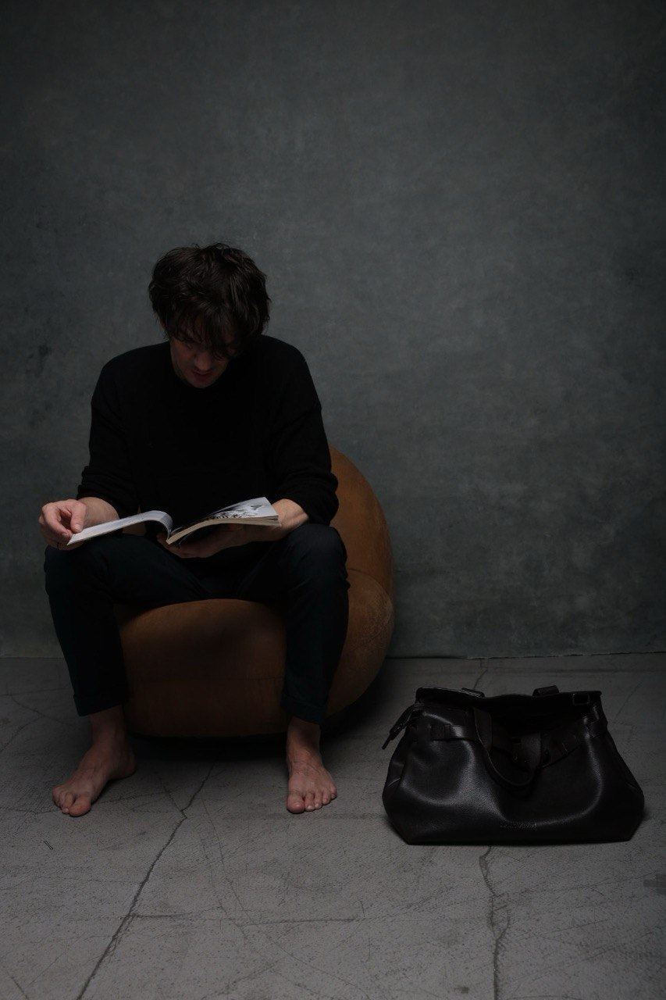

Избегающий тип привязанности
Когда хочется близости, но стоит ей появиться — становится тесно. Разбираемся, как устроен этот сценарий, откуда он берётся и что с ним можно делать.

Что это такое
Тип привязанности — это привычный способ, которым мы ищем близость и справляемся с ней. Он складывается в детстве, в отношениях с теми, кто о нас заботился, и потом незаметно переносится во взрослую жизнь: в любовь, дружбу, работу.
Человек с избегающим типом привязанности рано усвоил, что надёжнее рассчитывать на себя. Его чувства не всегда встречали отклик — и психика нашла выход: меньше нуждаться в других. Во взрослой жизни это выглядит как сильная самостоятельность. А внутри часто живёт напряжение, которое включается именно тогда, когда отношения становятся по-настоящему близкими.
Как это проявляется
- iБлизость ощущается как давлениеЧем ближе человек, тем сильнее хочется отойти, взять паузу, «подышать».
- iiЧувства — при себеО важном проще молчать или говорить с иронией, чем открыто показать, что задело.
- iiiПросить о помощи трудноКажется, что справиться самому надёжнее, а зависеть от кого-то — опасно.
- ivОтношения «на расстоянии» спокойнееЛегче, когда партнёр далеко или когда в отношениях есть понятные границы и правила.
- vВнимание к недостаткам партнёраКогда отношения углубляются, особенно заметными становятся чужие минусы — и появляется повод отдалиться.
Избегание — не холодность. Чаще это очень ранний и когда-то необходимый способ защитить себя от боли.
Чем это не является
Это не диагноз и не черта, с которой человек «рождается». Тип привязанности — не приговор и не ярлык: он описывает привычку, а привычки меняются. Многие люди с избегающим типом строят тёплые долгие отношения — особенно когда начинают замечать свой сценарий и понимать, что за ним стоит.
И ещё: в чистом виде типы встречаются редко. Обычно речь о том, какие тенденции сильнее, и они могут меняться в разных отношениях и в разные периоды жизни.
Четыре типа привязанности
Психологи описывают привязанность двумя осями: насколько мы избегаем близости и насколько тревожимся за отношения.
Надёжный
Близость и самостоятельность уживаются: можно опереться на другого и остаться собой.
Тревожный
Очень важно чувствовать, что ты нужен; страшно, что человек отдалится.
Избегающий
Надёжнее опираться на себя; когда становится слишком близко — хочется дистанции.
Тревожно-избегающий
Близость одновременно желанна и пугает: хочется опоры, но открываться страшно.
Какой у вас тип привязанности?
Отвечайте, как вы обычно чувствуете себя в близких отношениях — с партнёром, семьёй, друзьями. Ответы остаются только в вашем браузере.
Что помогает
- Замечать момент, когда хочется отойти. Не бороться с ним, а просто отметить: «вот, стало тесно». Уже это даёт немного свободы выбора.
- Говорить о потребности в пространстве словами. «Мне нужно немного побыть одному, это не про тебя» звучит совсем иначе, чем молчаливое исчезновение.
- Пробовать маленькие шаги открытости. Рассказать о чувстве чуть раньше, чем обычно. Попросить о небольшой помощи.
- Разобраться, откуда сценарий. Понимание того, чему он когда-то служил, часто снимает с него часть силы. Это одна из главных тем в работе с психологом.